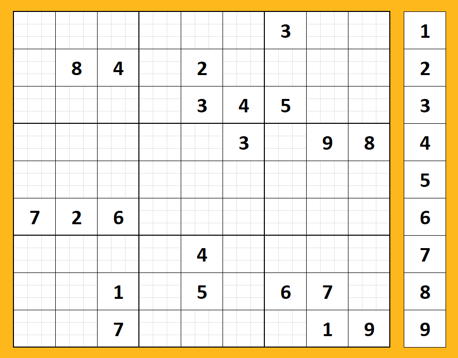

Welcome to the world of Sudoku, where you only need to know 9 numbers to solve over 5 billion puzzles! Many find they understand the basics of the game through intuitive logic. However, to solve complex puzzles more efficiently you can learn strategies to help identify patterns within the grid. The techniques may seem daunting at first, but soon enough it will become easier than flying a kite!

Sudoku Basics
Each puzzle consists of a 9x9 grid, divided into 3x3 subgrids (Or houses).
Your objective is to fill every cell using the numbers 1-9.
The trick is that each number (1-9) may be used only once per column, once per row, and once per house.
This means that every column, row, and house will each have a value of 45 in the end, called the 45 rule.
Each puzzle begins with some cells filled in called givens. The more difficult the puzzle the less givens you will begin with.
Every valid Sudoku puzzle has only one correct solution.
There is no need for guessing! Every puzzle can be solved with logic and utilizing techniques developed to assist.
Sudoku used to be an exclusively pen and paper pursuit, but with today's technology you can play anywhere you go!
Go the Help page linked in the navigation menu to learn more, or click Play to get started!